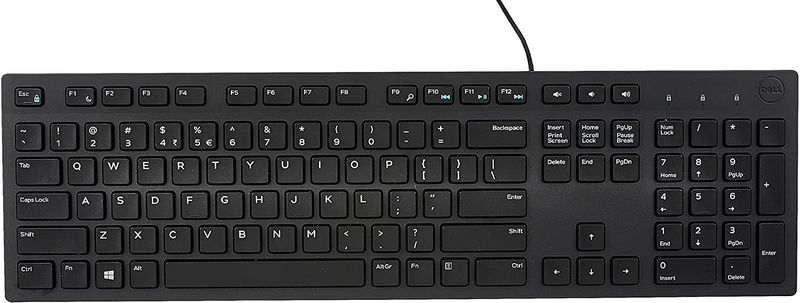

ตาแมวมีเลนส์อยู่ด้านหน้าซึ่งจะขยายแสงสะท้อน เพื่อให้เมาส์สามารถตอบสนองการเคลื่อนไหวของมือได้แม่นยำยิ่งขึ้น เมื่อคุณดันเมาส์ไปรอบๆ โต๊ะ รูปแบบของแสงสะท้อนจะเปลี่ยนไป และชิปภายในเมาส์จะใช้สิ่งนี้เพื่อดูว่าคุณขยับมืออย่างไร

แป้นพิมพ์ประกอบด้วยสวิตช์เชิงกลหรือปุ่มกดจำนวนมากที่เรียกว่า "คีย์" เมื่อกดสิ่งใดสิ่งหนึ่ง วงจรไฟฟ้าจะปิด และคีย์บอร์ดจะส่งสัญญาณไปยังคอมพิวเตอร์เพื่อบอกว่าต้องการให้แสดงตัวอักษร ตัวเลข หรือสัญลักษณ์ใดบนหน้าจอ